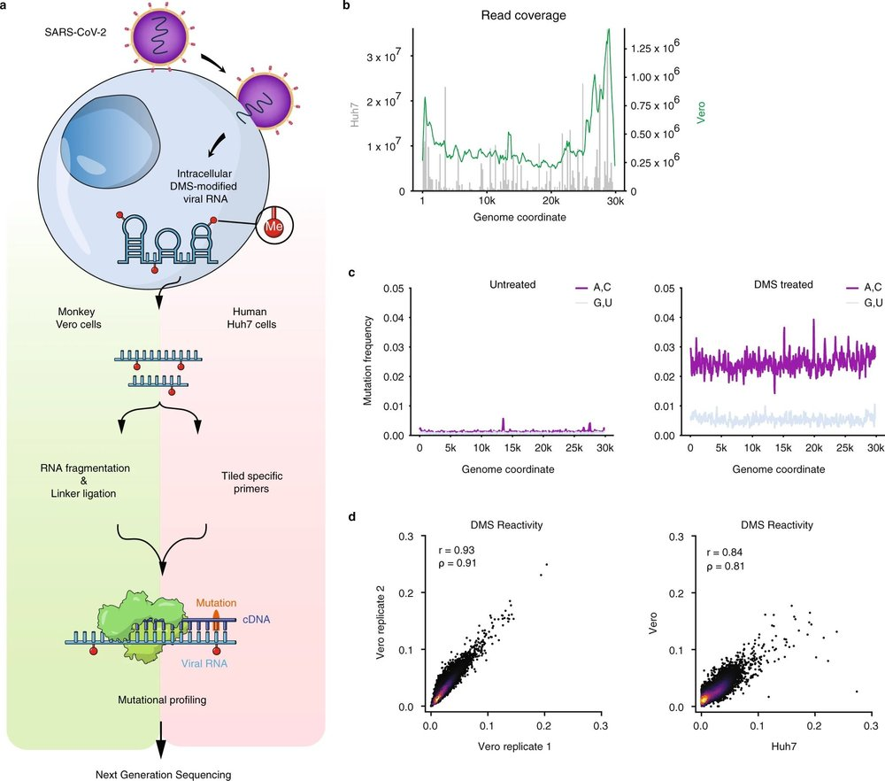

Publications
Papers, preprints, methods, and reviews.

2025
2024


Current Opinion in Structural Biology
Untangling the pseudoknots of SARS-CoV-2: insights into structural heterogeneity and plasticity

Nucleic Acids Research
Viruses
Current Protocols
bioRxiv
2023
Nature Structural & Molecular Biology
Trends in Biochemical Sciences
Trends Biochem Sci
RNA levers and switches controlling viral gene expression
Nature Communications
Nature Communications
3D RNA-scaffolded wireframe origami
bioRxiv
bioRxiv preprint
Structure of pre-miR-31 reveals an active role in Dicer processing
2022
Nature Communications
Secondary structural ensembles of the SARS-CoV-2 RNA genome in infected cells

Nature Communications
Nature Communications
An intranasal ASO therapeutic targeting SARS-CoV-2
Nucleic Acids Research
Nucleic Acids Research
Web-based platform for analysis of RNA folding from high-throughput chemical probing data
JoVE
bioRxiv
2020
2018
Molecular Cell
2017
2014

Molecular Systems Biology
Earlier
Cell
Nature Protocols
Curr Protoc Mol Biol
Curr Protoc Mol Biol
Genome-wide annotation and quantitation of translation by ribosome profiling
J Pediatr
J Infect Dis
J Clin Microbiol
Virology Journal
Virology Journal
Genome-wide diversity and selective pressure in the human rhinovirus
Clin Infect Dis